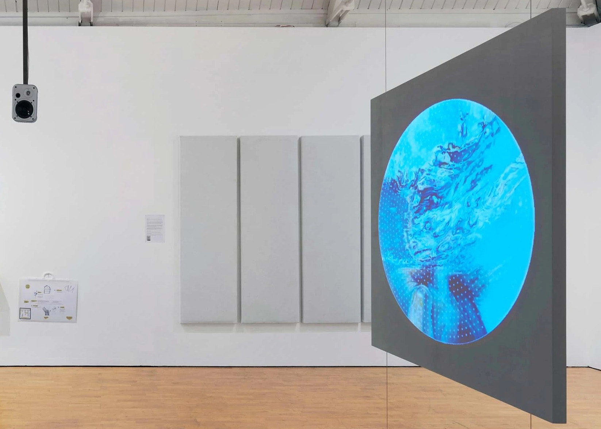
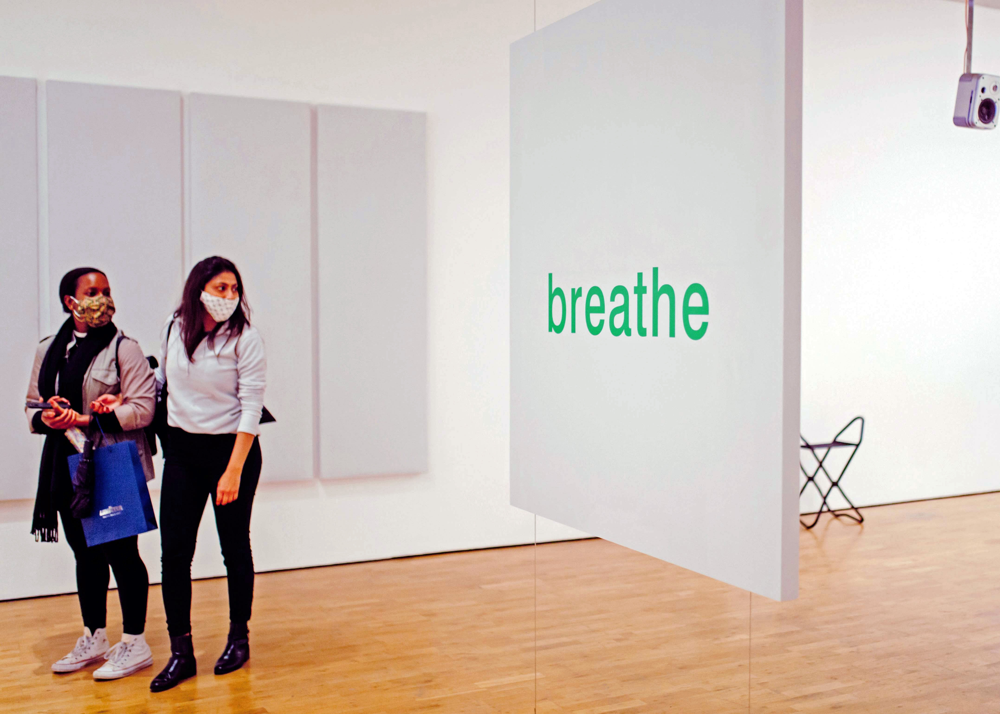
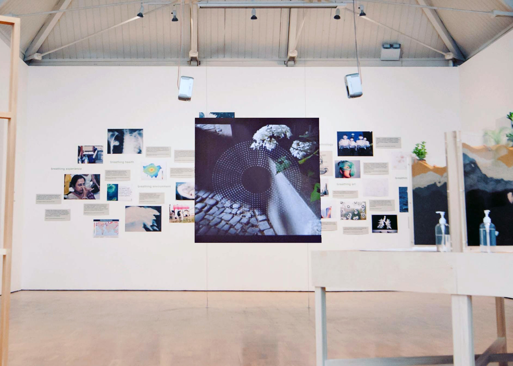
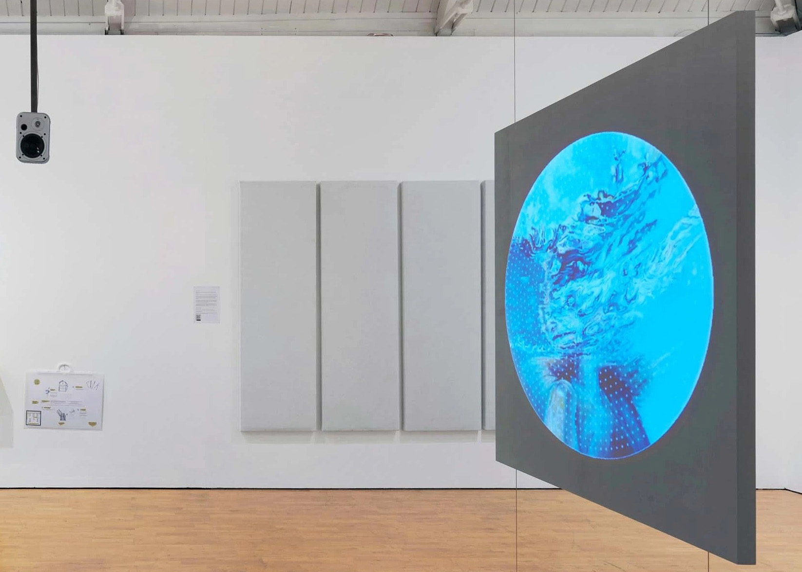
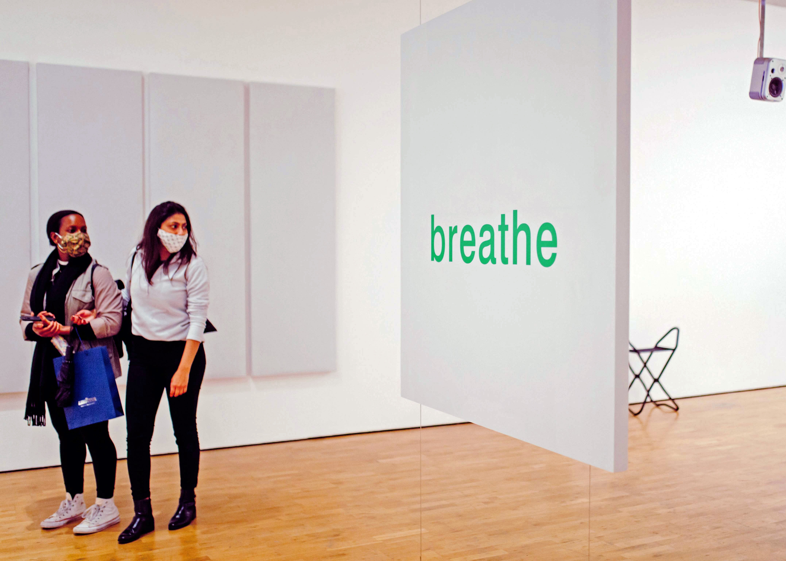
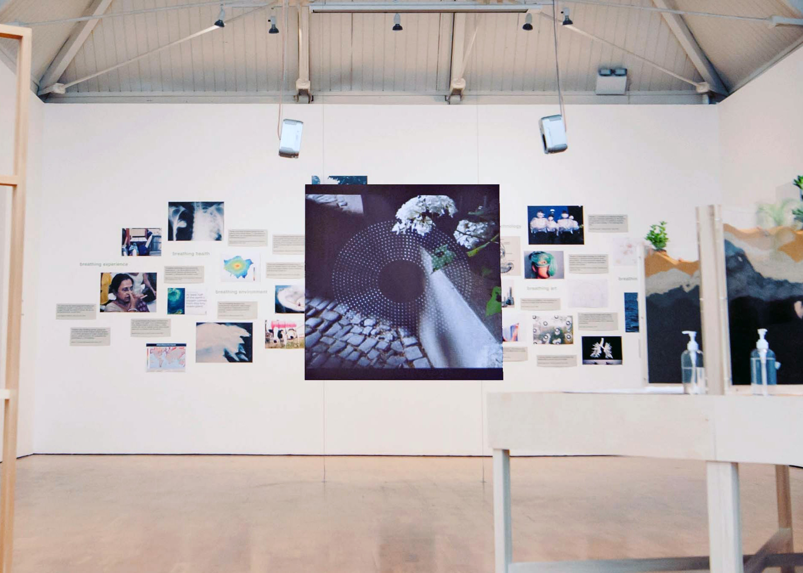

Breathworks
Digital participatory arts | Modern Art Oxford

Throughout 2020, Modern Art Oxford, prompted by Lucy, invited participants to contribute their own ‘breathwork’ by capturing experiences of breathing via images and sound recording. The result is a beautiful collection of personal stories about this most essential experience. – Emma Ridgeway, Chief Curator, Modern Art Oxford
In early 2020, I was faced with the exciting challenge of designing and developing Modern Art Oxford’s first digital participatory art project. To do so, I worked with local focus groups to co-design a user-friendly framework that would allow a range of experiences to find creative expression. The gallery’s audiences were invited to capture an experience related to breathing, submitting an image and 20-60 seconds of audio via a simple web form. These media were then layered with a circular sound wave before being uploaded to social media and an online exhibition. We enabled an Instagram integration so that all #breathworks posts would populate an online gallery.
Breathworks launched to the general public on 1 August until 31 August, gathering 32 submissions for the online exhibitions and many more contributions displayed in the gallery as part of the Responsive Space exhibition, 2 October – 23 December 2020. On Instagram, the project reached 50,000 users and logged 12,000 views. Breathworks featured on BBC Arts, Art Daily, a-n The Artists Information Company, and The Oxford Times. The project led to collaborations with the The Oxford Research Centre in the Humanities (University of Oxford) and Oxford Kindness Wave. For Children's Mental Health Week (February 1-8, 2021), I teamed up with local yoga teacher Najia Bagi and painter Ella Shepard to make a breathing meditation video for young people inspired by Breathworks that was distributed in local schools and online. | Exhibition photography by Ben Westoby and Helen Messenger.
 





Breathworks was Modern Art Oxford’s first online participatory project, the success of which has enabled the gallery to create an annual project that uses similar approaches to address topical themes and target particular audience groups. – Maria Moorwood, Head of Development, Modern Art Oxford.
It took me out of my lockdown day’s plans and into something I had not expected this morning. | Breathing is always important, but in the current climate it needs to be focussed on. | I've had such a positive response to my Breathworks from friends and colleagues […] I've gone on working with the ideas we explored […] so the experience was certainly of lasting benefit.
– Feedback from participants.